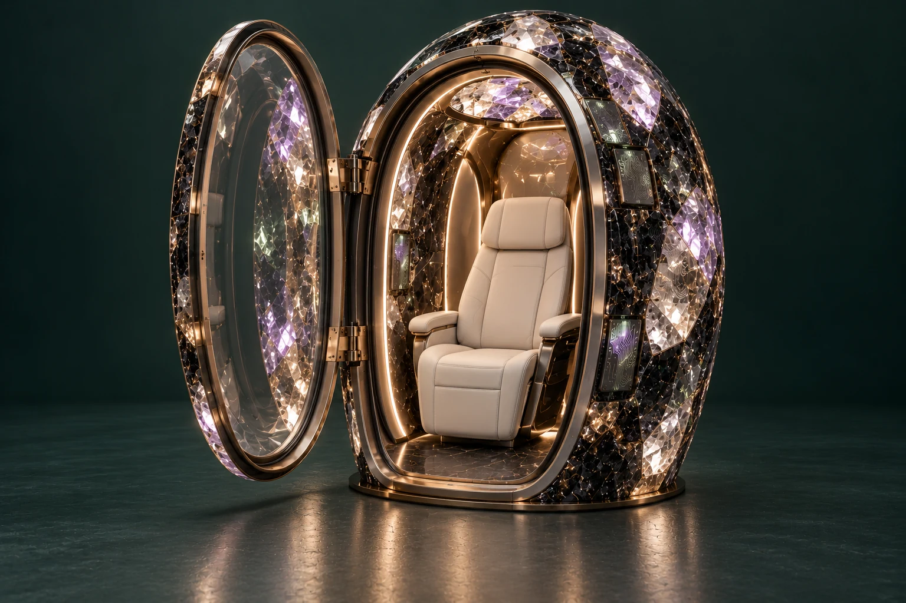

PATHWAY 04 / COMPUTATIONAL CRYSTALLINE GEODE · VERSION 3
When the shell becomes a system.
The long horizon is a crystalline architecture with addressable sensing, routing, memory and computation—progressing towards atomically precise manufacturing through measured devices.
Start with a function that works.
A replaceable tile performs a named task. A connected region adds routing and fault localisation. Integrated layers bring device, interconnect and thermal structures into the material architecture. Atomic-precision specimens examine a defined region with inspectable placement and device measurements.
Computation has physical costs.
Each workload states inputs, expected outputs and a test set. Trials measure task fidelity, latency, memory, power and energy per completed task. Heat generation, conduction and rejection require an explicit model and full-workload measurements.
- Memory · retention, endurance, read errors and restoration.
- Routing · bandwidth, synchronisation, isolation and fault recovery.
- Integration · interface quality, yield, drift and lifecycle response.
- Service · access routes, replaceable regions, keys and recoverable records.
Research provides starting points.
Published photonic processors and optical-memory experiments offer architectures to study. NIST describes atom-scale fabrication, metrology, encapsulation and electrical contacts. These sources support device research questions; they do not establish a functioning computational Geode.
Atomic precision is a research objective.
The target identifies the structures to place, intended function and inspection method. Placement accuracy, defects, contacts, device yield and stability determine progress. A successful specimen would enter a tile experiment before a larger region or shell study.
The person’s record travels across generations.
The same provenance, correction and permission controls are intended to persist as functions move into the shell. Material repairs and personal data recovery need independently serviceable paths. Larger training and simulation jobs retain separately agreed compute destinations.
Emergency egress is an acceptance gate.
Entry, door operation, assisted transfer and emergency extraction must conform to the applicable requirements for the actual chamber and site. The project retains dimensioned evidence, a reviewed emergency procedure and rehearsed acceptance before participant use. The dedicated entry and egress chapter follows this requirement across every pathway.